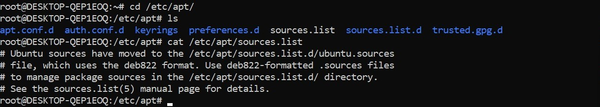

We have seen YUM Like that for Ubuntu we have a package manager 'apt'.
The sources. list file is a key factor in adding or upgrading applications to your Ubuntu installation. This is also used by your system for system updates. The file is basically the roadmap for your system to know where it may download programs for installation or upgrade.
# cat /etc/apt/sources.list
Shows the usage of apt Command with options
# apt --help